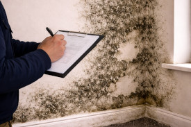
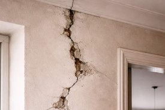

If your survey failed to highlight damp, roof problems, cracks, structural warning signs or other costly defects before you bought, your case may be worth checking.
Quick eligibility check
Damp & moisture issues
Check whether visible damp, mould, staining, or water ingress should have been flagged.
Roof & exterior concerns
Review whether roof defects, slipped tiles, or exterior deterioration may have been understated.
Cracks & movement
Find out whether warning signs of cracking or structural movement deserved stronger attention.
Clear first review
A simple way to assess whether the survey report may deserve deeper examination.
Common problem
Many survey concerns only become clear after completion, when damp, roof damage, cracking, timber problems, or hidden deterioration start to show up.
If warning signs were present before purchase, it may be worth reviewing whether the survey gave a fair and competent picture of the property’s condition.
You may have grounds for a review if:

Where moisture problems were not properly identified before purchase, buyers can later face major repair costs and disruption.
Roof deterioration, external defects, and weather-related issues are among the types of problems that may deserve stronger reporting.

If the survey overlooked cracking, settlement, or other structural warning signs, it may be worth reviewing what was missed.
Simple process
Tell us whether the concern relates to damp, roof defects, cracks, hidden defects, or repair costs.
The survey report, photographs, invoices, expert findings and timing of discovery can help show what happened.
If the case appears suitable, you can choose whether to move forward with further support.
Interactive review tool
Answer a few quick questions to get a broad indication of whether your property survey may deserve closer review.
Estimated Review Potential
£0
This is a broad guide only. Actual outcomes depend on the survey report, photographs, timing, repair evidence, expert findings and full case review.
Start Free Case CheckCommon survey review issues
If the survey gave you confidence to proceed but major defects later appeared, it may be worth reviewing whether the report fairly reflected the property’s condition.
Start Your Free ReviewWhy choose Quaerens
We help review problems involving missed defects, warning signs, property condition reports, and costly issues discovered later.
Begin with a simple first assessment before deciding whether to take things further.
Reports, photographs, invoices, expert findings, and timelines help clarify what may have been missed.
We keep the process straightforward and explain the possible next steps clearly.
Frequently asked questions
“We discovered major damp and mould after moving in, but the report gave no clear warning of the likely problem.”
Damp and moisture concerns
“The roof issues became clear only later, but the photos and later reports suggested there may have been visible warning signs.”
Roof and exterior concerns
“We relied on the survey and then faced expensive repairs soon after buying. We wanted to understand whether the report was fair.”
Repair cost and reliance concerns
Take the next step
Find out whether damp, roof defects, cracking, or other missed property issues justify closer review.
Begin Free Assessment